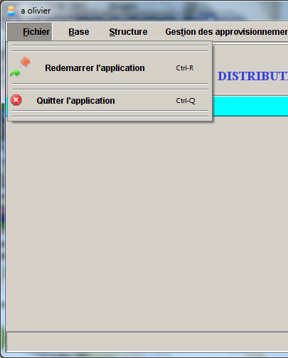

| |
Le MENU FICHIER
Le menu >>Fichier>> ne comporte pour l'instant que deux opérations : >>Redémarrer l'application>> et >>quitter l'application>>
qui vous permet de fermer votre session et par vous deconnecte au du système.Pour confirmer la fermeture de l'application , assurez-vous
que vous avez mener à bien vos opérations.Si des problèmes spécifiques se pose , contacter votre administrateur...
D'autres opérations pourront être ajoutées dans les versions futures de cette application. Vous pouvez cependant nous faire
vos propositions pour l'ajout d'autres fonctionnaités. Elles sonts souhaitées et seront les bienvenues.
|
 |